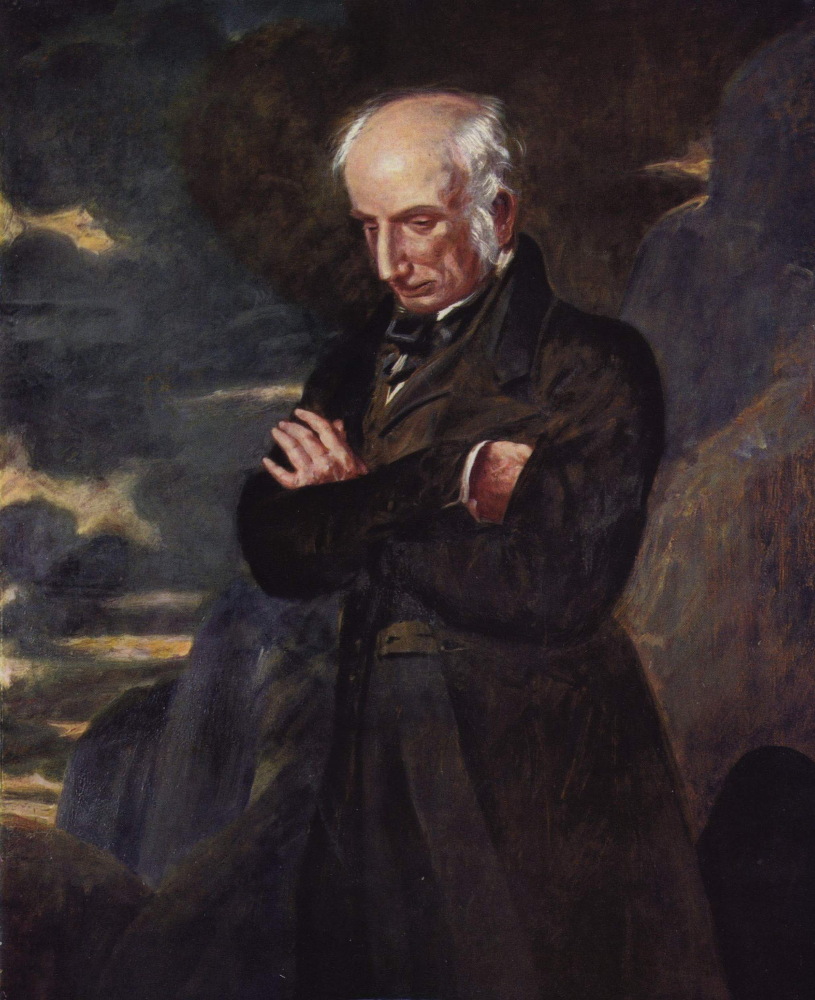

The Review.
He become famous and well-payed intellectual, but the Queen Anne did not like what he write so she decided to arrested,
tried and imprisoned. When he was free became a Secret Agent for the new government.
He starts to write novel in 1719 with Robinson Crusoe.
Daniel Defoe was regarded as The father of English Novel his novel are characterised by a series of episodes and there was the presence of a single hero The narration was in First Pearson and the characters are presented from the inside
Jonathan Swift was born in 1667 in Dublin where he was educated, after his parents in 1688 during the Glorius Revolution
decided to returned to England.
Willaim Temple encouraged him to write his first satirical works like "The Battle of the Books" and "A Tale of a Tub".
After he returned to Ireland were writed some texts to defended the Ireland
In 1726 he published his most important text: Gulliver`s Travel.
He defined himself as an Hater of man he described 'an animal capable of reason', he used the effect of
William Blake was born in London in 1757, he was a political freethinker, he support the Franch during the revolution.
He had a strong sense of religion, he took inspiration by the Bible.
He was regarded as early Romantic becouse he rejected the neoclaassical literary, he also create the
illuminated printing the combination of picture and poetic text.
His most importants texts are the Songs of Innocence and Songs of Experience

Willaim Wordswroth was born in Lake District in the north west of England. H studied at the St. John’s College in Cambridge.
In 1790 he went on a walking tour of Italy, The Alps and France after he come back to England and spent some time in Somerset.
Wordswroth with Coloriedge write the Lyrical Ballads and they decide to publish it anonismuly in 1798.
During is period in France he married Annette Vallon who gave him a daughter after he falled in a period of depression
but thanks to his sister he can escape from it.
Wordswroth thiks that men and nature are inseparable, he also has a
panteistic view of nature.
One of his most important text was Daffodils
Samuel Taylor Coloridge was born in Devon in 1772, he recived an excellent education in the classic. In 1794 he met the poet Robert Southey. He planned with him to move to America and found a Pantisocracy, a Utopian community made up of 12 couples based on equal rights, common ownership and the abolition of private property. The project was never realized but through it he met Sara Fricker who became his wife. They had four children.
In 1797 he go to Somerset and he became close friends of Wordswroth, with him in 1798 write and publish anonimusly the Lyrical Ballads.
After 2 years they publish the 2 volume of the Lyrical Ballads that include an important Preface that explains what they are doing.
The nature for Coloridge represented the awareness of the presence of the ideal in the real. NOT LIKE WORDSWROTH His most important text is The Rime Of The Rime Of Ancient Mariner
Byron was born in 1788, he was an unconventional aritocrat, he studied at Cambridge University.
In 1809 he set out on his Grand Tour of Spain, Portugal, Malta, Albania, Greece and the Middle East.
In 1815 he married Annabella Milbanke but the marriage collapsed a year later because
had relationship with his half-sister Augusta Leigh.
He set in Geneva where become friend of Percy Bysshe Shelley..
He died in the town of Missolonghi in 1824, for severe fever.
He created the Byronic Hero that is a mysterious men that hides secret, is proud of individualism.
He looks hard and hansome, women cannot resist him but he refuses theu love, thi rebelliousness and eroticism was irresistible in Byron`s age
His most important text is Manfred
Percy Bysshe Shelley was born in Sussex in 1792, he rebelled early agains his conventional background.
He was expelled from Oxford University, at the gae of 19 he married a 16 years-old girl.
They travel for a long period but after they come back to England where he divide his marrige and eloped with Mary Godwing.
Percy Bysshe Shelley based is nature in the ethernal truth His most important text was Ode To The West Wind.
John Keats was born in London in 1810, he studied Medicine.
He was frinds of Shelly and Wordswroth that encouraged him to publish his firs volume.
After the death of his brother he moved to Hampstead were he fall in love and contract the Tubercolosis He start to publish his works from 1818
His poetry is based on the negative capability, he menas to put his reason aside and to lose himself inimmagination.
Text: Ode On A Grecian Urn
Edgar Allan Poe was born in Boston in 1809, he was son of poor, his father had a reputation of alcholic and his mother of consumption. He escaped from Boston becouse he ran into debt, he started to write novel, he fall in love of his cousin Virgina thei married when he was 27 and she 13.
We can divided his tales in >two part:
1st: Tales of ratiocination or detection story about detectiev story were the protagonist was Monsieur Dupin, he soved the problem with the deductive method.
2nd: Tales of Immagination that present Ghotic elements, so he writed Horror sotry from inside. NOT OUTSIDE Text: The The Tell-Tale Heart